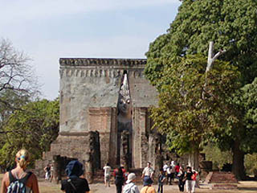
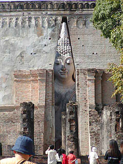
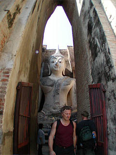
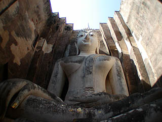
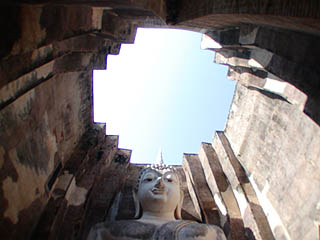
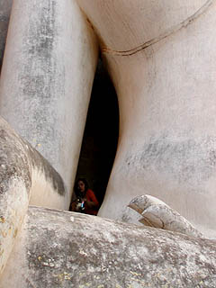
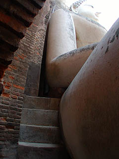
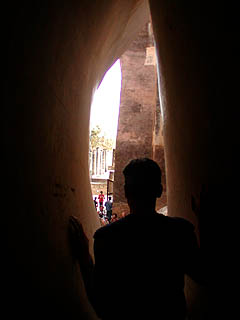
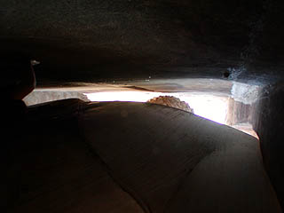
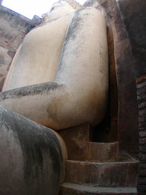

ワットシーチュム
WatSriChum/Sukhothai
世界遺産でもあるスコータイ遺跡群の一つにワットシーチュムという寺院跡がある。
タイの観光ガイドやポスターなどにも頻繁に登場するので御存じの方も多いと思うが、何と言っても建物の隙間から大仏が見える、というビジュアルインパクトが強烈だ。
お堂自体は32メートル角の四角い建物でスリットがなければただの煉瓦積みの箱なのだがスリットを正面から見るとこんな感じ。
 
スリットいっぱいに大仏がこちらを伺っている。東大寺の大仏さんの覗き窓を彷佛とさせる大仏デバイスである。

このスリットだけが内部への入口になっている。
入り口の鉄扉のある部分は3メートルの厚みの壁になっており、その中はトンネル状の通路になっている。
現在その通路は公開されていないのだが。
 
スリットを抜けると、内部空間いっぱいに座像の大仏さんが納まっている。
ちなみに大仏の色は近年塗り替えられたらしい。
それについて日本の学者がとある本で「このような貴重な遺跡に色を塗るとははなはだ理解に苦しむ」などと苦言を呈していたが、現地の人にしてみれば世界遺産でも遺跡でもなく信仰の対象ですからねえ〜、やっぱ塗るでしょ。
屋根はないので上を見上げると四角く切り取られた空が見える。
大仏の左側にある小窓は現在閉鎖されている通路を通って行くのだろう。
いかにもタイらしいシルエットの美しい艶かしい大仏さんだなあ、などと思っていると

ありゃ、脇の下に人がいる！
えっ、どうやって行くんだ？行きたい、行きたいぞおお！

と探す事、十秒。大仏の脇にこんな隙間を見つけました。
階段の部分はともかく肘と壁の間はかなり狭く、激太りの白人さんなんかは通れませんでした。
何とか隙間を通り抜けると・・・

おお、絶景かな絶景かな。
皆、私に向かって拝んでいるぞ。ま、ま、頭をお上げ下さい。

上を見上げると壁と大仏の間が幾らも開いていないことが判る。
大仏建造後に建物はつくられたそうだが、よくもまあ、こんなキッチキチに建てたもんですなあ。
ここから見たら曙みたい。そう言えば曙負けちゃいましたね。タイのスポーツ新聞でも一面に載ってました。

出口はこちら。
入口だけでなくこんな隙間があるとは。閉所好きにはこたえられない物件である。
大仏による圧迫プレイを御所望の方は是非！
世界遺産というと半分崩れた煉瓦積みの建物ばかりといった印象が強いが、こんな遊び心あふれた世界遺産ならいつでもOKですぞ！
次は地獄だ！
泰国超絶地獄列伝
珍寺大道場 HOME